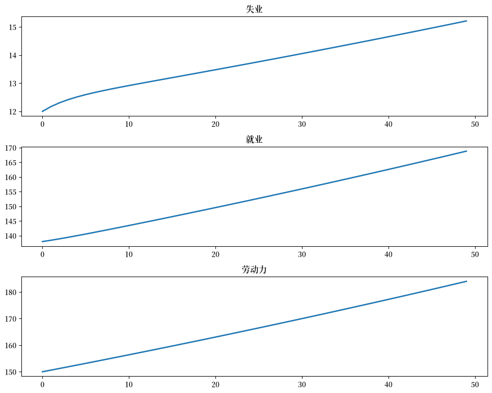
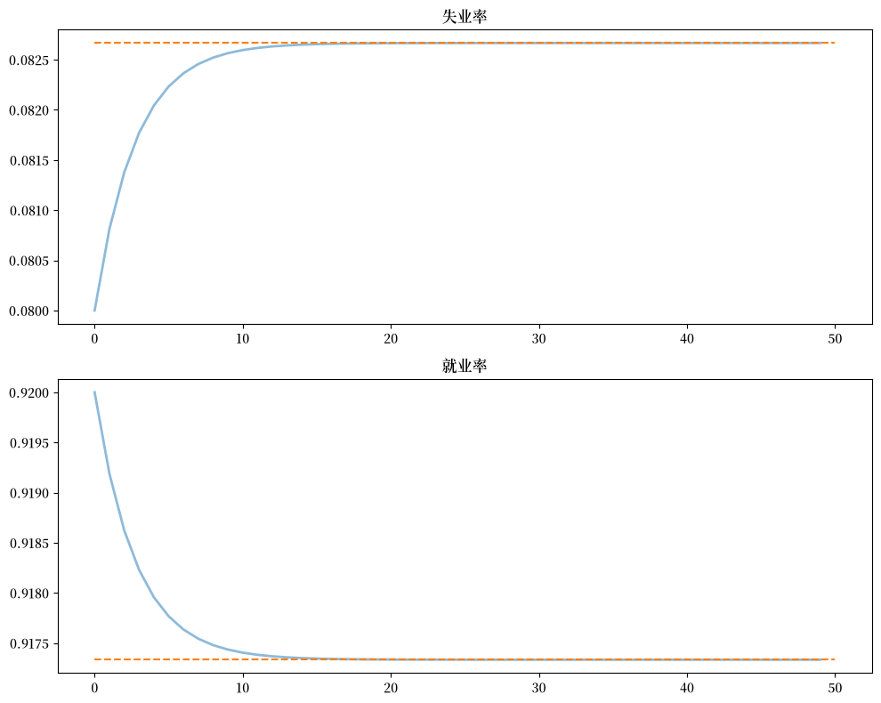
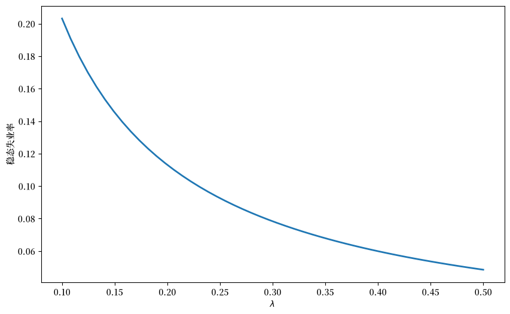
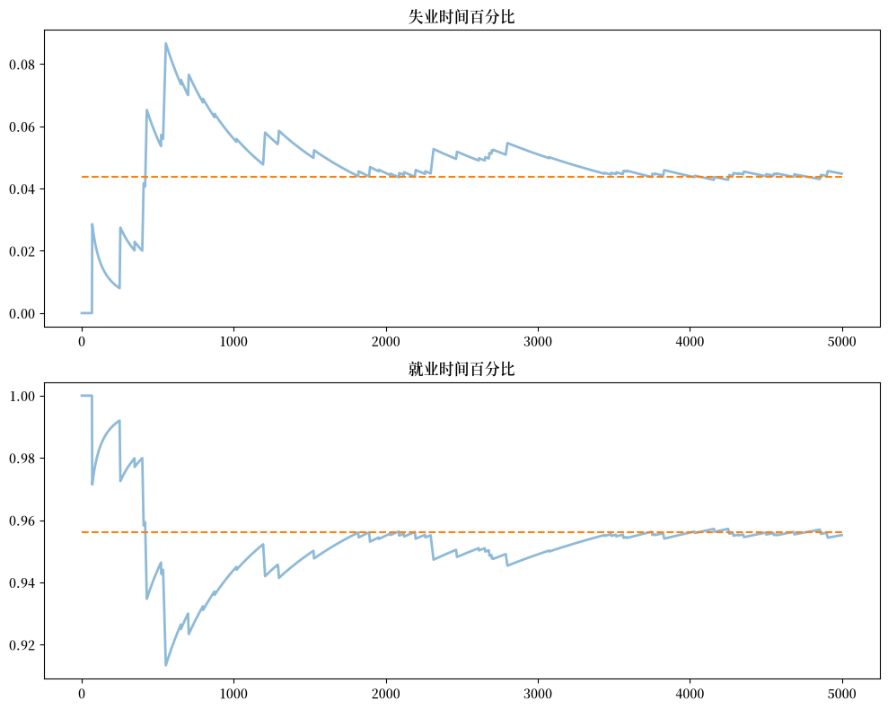
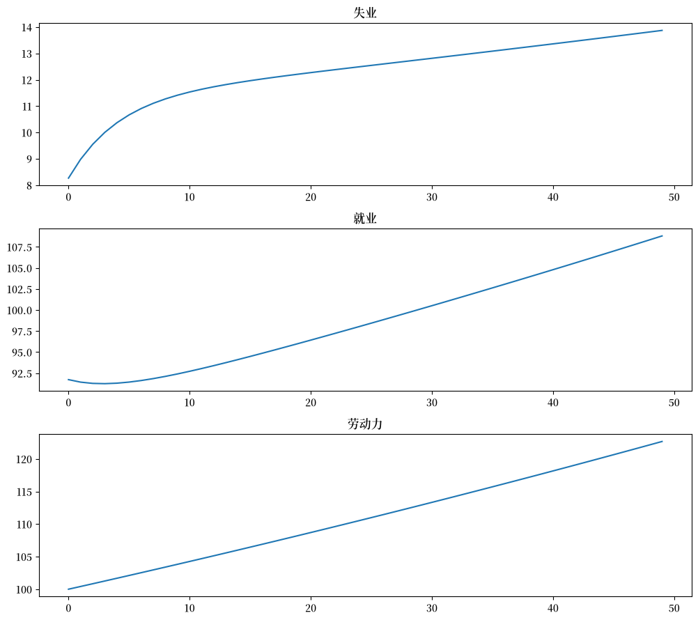
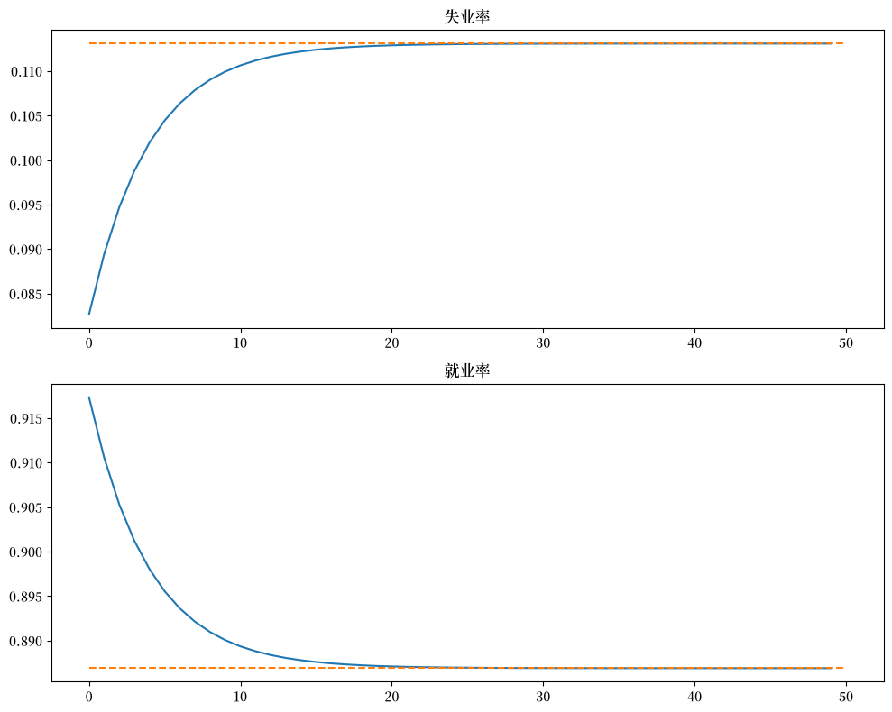
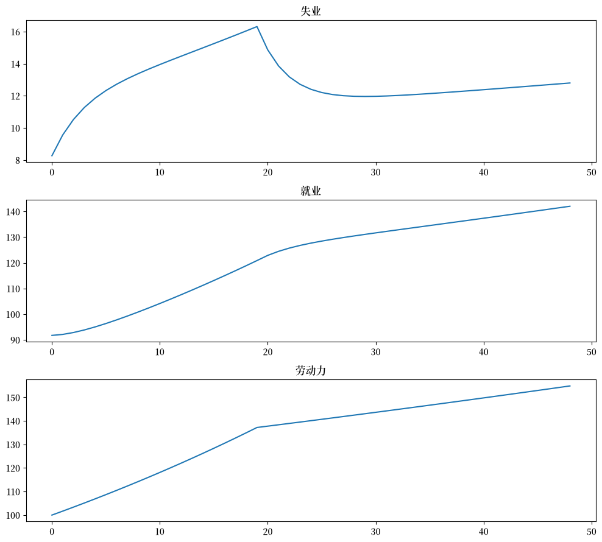
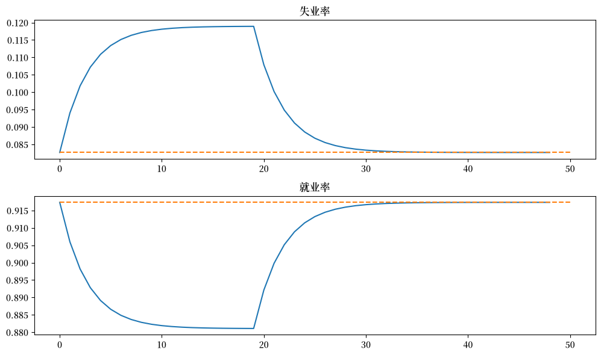

105. 就业与失业的湖泊模型#
GPU
本讲座是在配有GPU的机器上构建的——不过没有GPU也可以运行。
Google Colab 提供带GPU的免费套餐，使用方法如下：
点击右上角的”播放”图标
选择 Colab
将运行时环境设置为包含GPU
除了Anaconda环境中自带的库之外，本讲义还需要安装以下库：
!pip install quantecon jax
105.1. 概述#
本讲义介绍了一种被称为湖泊模型的框架。
湖泊模型是用于刻画失业动态的基础分析工具。
它使我们能够系统地研究：
失业与就业之间的流动
这些流动如何影响稳态就业率和失业率
本模型有助于解释劳动部门每月关于毛额与净额的岗位创造与岗位流失的统计报告。
模型中的”湖泊”是就业者与失业者的群体池。
而”流动”则对应于下列行为所导致的转换：
解雇和雇佣
劳动力市场的进入和退出
在本讲义的前半部分，我们假定失业和就业之间的转换参数是外生的。
之后，我们将通过McCall搜索模型内生化其中一些转移率。
此外，我们还将引入一些重要的概念，如遍历性（ergodicity），它为横截面分布与长期时间序列分布之间提供了基本的理论联系。
这些概念将帮助我们建立一个均衡模型，该模型描述了事前同质的个体，由于不同的运气，在事后经历上表现出差异。
首先，我们导入所需的程序库：
import matplotlib.pyplot as plt
import matplotlib as mpl
FONTPATH = "fonts/SourceHanSerifSC-SemiBold.otf"
mpl.font_manager.fontManager.addfont(FONTPATH)
plt.rcParams['font.family'] = ['Source Han Serif SC']
import jax
import jax.numpy as jnp
from typing import NamedTuple
from quantecon.distributions import BetaBinomial
from functools import partial
import jax.scipy.stats as stats
105.1.1. 前置知识#
在学习本讲义内容之前，我们建议先阅读有限马尔可夫链讲座。
此外，你还需要具备一些线性代数和概率论的基础知识。
105.2. 模型#
假设经济体中存在大量的事前同质的劳动者。
这些劳动者被设定为寿命无限，并且不断地在失业与就业之间转换。
就业与失业之间的转换由以下几个参数所刻画：
\(\lambda\)：当前失业者的求职成功率
\(\alpha\)：当前就业者的解雇率
\(b\)：劳动力市场进入率
\(d\)：劳动力市场退出率
劳动力的增长率显然等于 \(g=b-d\)。
105.2.1. 总量变量#
我们想要推导以下总量变量的动态演化：
\(E_t\)：\(t\) 时刻的就业者总数
\(U_t\)：\(t\) 时刻的失业者总数
\(N_t\)：\(t\) 时刻的劳动力总数
105.2.2. 存量变量的运动规律#
我们首先构建总量变量 \(E_t,U_t, N_t\) 的运动规律。
对于 \(t\) 时刻就业的劳动者群体 \(E_t\)：
\((1-d)E_t\) 将留在劳动力市场中
其中，\((1-\alpha)(1-d)E_t\) 将保持就业
对于 \(t\) 时刻失业的劳动者群体 \(U_t\)：
\((1-d)U_t\) 将留在劳动力市场中
其中，\((1-d) \lambda U_t\) 将找到工作
因此，\(t+1\) 时刻的就业者总量是：
类似地，
其中，\(b(E_t+U_t)\) 表示新进入劳动力市场且尚未就业的个体数量。
劳动者总量 \(N_t=E_t+U_t\) 的演变如下：
令 \(X_t := \left(\begin{matrix}U_t\\E_t\end{matrix}\right)\)，其运动规律为：
该动态系统清晰地描述了总失业量与就业量随时间演化的规律。
105.2.3. 比率的运动规律#
现在让我们推导比率的运动规律。
我们想要追踪以下对象的值：
就业率 \(e_t := E_t/N_t\)。
失业率 \(u_t := U_t/N_t\)。
（在这里及下文中，大写字母代表总量，小写字母代表比率）
为了得到这些，我们可以将 \(X_{t+1} = A X_t\) 的两边都除以 \(N_{t+1}\) 得到：
令
我们也可以将其写为
可以验证，由于\(e_t + u_t = 1\)，因此 \(e_{t+1}+u_{t+1} = 1\)。
这一结果来源于矩阵 \(R\) 的各列之和为1。
105.3. 实现#
让我们将这些方程编写成代码。
105.3.1. 模型#
首先，我们设置一个名为 LakeModel 的类，用于存储原始参数 \(\alpha, \lambda, b, d\)。
class LakeModel(NamedTuple):
"""
湖泊模型的参数
"""
λ: float
α: float
b: float
d: float
A: jnp.ndarray
R: jnp.ndarray
g: float
def create_lake_model(
λ: float = 0.283, # 求职成功率
α: float = 0.013, # 离职率
b: float = 0.0124, # 出生率
d: float = 0.00822 # 死亡率
) -> LakeModel:
"""
使用默认参数创建一个LakeModel实例。
计算并存储转移矩阵A和R，
以及劳动力增长率g。
"""
# 计算增长率
g = b - d
# 计算转移矩阵A
A = jnp.array([
[(1-d) * (1-λ) + b, (1-d) * α + b],
[(1-d) * λ, (1-d) * (1-α)]
])
# 计算标准化转移矩阵R
R = A / (1 + g)
return LakeModel(λ=λ, α=α, b=b, d=d, A=A, R=R, g=g)
默认参数值为：
\(\alpha = 0.013\) 和 \(\lambda = 0.283\) 的取值参考[Davis et al., 2006]
作为一个实验，让我们创建两个实例，一个 \(α=0.013\)，另一个 \(α=0.03\)
model = create_lake_model()
print(f"默认 α: {model.α}")
print(f"A 矩阵:\n{model.A}")
print(f"R 矩阵:\n{model.R}")
默认 α: 0.013
A 矩阵:
[[0.7235063 0.02529314]
[0.28067374 0.97888684]]
R 矩阵:
[[0.7204946 0.02518786]
[0.27950543 0.97481215]]
model_new = create_lake_model(α=0.03)
print(f"新的 α: {model_new.α}")
print(f"新的 A 矩阵:\n{model_new.A}")
print(f"新的 R 矩阵:\n{model_new.R}")
新的 α: 0.03
新的 A 矩阵:
[[0.7235063 0.0421534 ]
[0.28067374 0.9620266 ]]
新的 R 矩阵:
[[0.7204946 0.04197793]
[0.27950543 0.9580221 ]]
105.3.2. 动态计算代码#
我们还将使用一个专门的函数，以高效且与JAX兼容的方式生成时间序列。
在JAX中迭代生成时间序列并不简单，因为数组是不可变的。
这里我们使用 lax.scan，它使得该函数可以被jit编译。
对于希望跳过细节的读者，可以在函数定义之后放心继续阅读。
@partial(jax.jit, static_argnames=['f', 'num_steps'])
def generate_path(f, initial_state, num_steps, **kwargs):
"""
通过反复应用更新规则来生成时间序列。
给定映射f、初始状态x_0和模型参数，该函数计算并返回序列
{x_t}_{t=0}^{T-1}，其中
x_{t+1} = f(x_t, **kwargs)
参数:
f: 更新函数，映射 (x_t, **kwargs) -> x_{t+1}
initial_state: 初始状态 x_0
num_steps: 需要模拟的时间步数 T
**kwargs: 传递给f的可选额外参数
返回:
形状为 (dim(x), T) 的数组，包含时间序列路径
[x_0, x_1, x_2, ..., x_{T-1}]
"""
def update_wrapper(state, t):
"""
用于适配f以便与JAX scan一起使用的包装函数。
"""
next_state = f(state, **kwargs)
return next_state, state
_, path = jax.lax.scan(update_wrapper,
initial_state, jnp.arange(num_steps))
return path.T
以下是用于更新 \(X_t\) 和 \(x_t\) 的函数。
def stock_update(X: jnp.ndarray, model: LakeModel) -> jnp.ndarray:
"""应用转移矩阵得到下一期的存量。"""
λ, α, b, d, A, R, g = model
return A @ X
def rate_update(x: jnp.ndarray, model: LakeModel) -> jnp.ndarray:
"""应用标准化转移矩阵得到下一期的比率。"""
λ, α, b, d, A, R, g = model
return R @ x
105.3.3. 总量动态#
让我们在默认参数下从 \(X_0 = (12, 138)\) 开始进行一次模拟。
我们将绘制序列 \(\{E_t\}\)、\(\{U_t\}\) 和 \(\{N_t\}\)。
N_0 = 150 # 人口
e_0 = 0.92 # 初始就业率
u_0 = 1 - e_0 # 初始失业率
T = 50 # 模拟长度
U_0 = u_0 * N_0
E_0 = e_0 * N_0
# 生成X的路径
X_0 = jnp.array([U_0, E_0])
X_path = generate_path(stock_update, X_0, T, model=model)
# 绘图
fig, axes = plt.subplots(3, 1, figsize=(10, 8))
titles = ['失业', '就业', '劳动力']
data = [X_path[0, :], X_path[1, :], X_path.sum(0)]
for ax, title, series in zip(axes, titles, data):
ax.plot(series, lw=2)
ax.set_title(title)
plt.tight_layout()
plt.show()
findfont: Failed to find font weight normal, now using 600.
findfont: Failed to find font weight normal, now using 600.

总量 \(E_t\) 和 \(U_t\) 不会收敛，因为它们的和 \(E_t + U_t\) 以速率 \(g\) 增长。
105.3.4. 比率动态#
另一方面，就业和失业率向量 \(x_t\) 可以达到稳态 \(\bar x\)，如果存在 \(\bar x\) 使得：
\(\bar x = R \bar x\)
分量满足 \(\bar e + \bar u = 1\)
这个方程告诉我们稳态水平 \(\bar x\) 是 \(R\) 与单位特征值相对应的特征向量。
以下函数可用于计算稳态。
@jax.jit
def rate_steady_state(model: LakeModel) -> jnp.ndarray:
r"""
通过计算与最大特征值对应的特征向量，
找到系统 :math:`x_{t+1} = R x_{t}` 的稳态。
根据Perron-Frobenius定理，由于 :math:`R` 是列和为1的非负矩阵
（即一个随机矩阵），其最大特征值等于1，
相应的特征向量给出稳态。
"""
λ, α, b, d, A, R, g = model
eigenvals, eigenvec = jnp.linalg.eig(R)
# 找到与最大特征值对应的特征向量
# (根据Perron-Frobenius定理，对于随机矩阵该特征值为1)
max_idx = jnp.argmax(jnp.abs(eigenvals))
# 获取相应的特征向量
steady_state = jnp.real(eigenvec[:, max_idx])
# 归一化以确保取值为正且和为1
steady_state = jnp.abs(steady_state)
steady_state = steady_state / jnp.sum(steady_state)
return steady_state
只要 \(R\) 的其余特征值的模小于1，我们也有 \(x_t \to \bar x\) 当 \(t \to \infty\)。
对于我们的默认参数，确实满足这一情况：
model = create_lake_model()
e, f = jnp.linalg.eigvals(model.R)
print(f"特征值的模: {abs(e):.2f}, {abs(f):.2f}")
特征值的模: 0.70, 1.00
让我们看看失业率和就业率如何收敛到稳态水平（虚线）
xbar = rate_steady_state(model)
fig, axes = plt.subplots(2, 1, figsize=(10, 8))
x_0 = jnp.array([u_0, e_0])
x_path = generate_path(rate_update, x_0, T, model=model)
titles = ['失业率', '就业率']
for i, title in enumerate(titles):
axes[i].plot(x_path[i, :], lw=2, alpha=0.5)
axes[i].hlines(xbar[i], 0, T, color='C1', linestyle='--')
axes[i].set_title(title)
plt.tight_layout()
plt.show()

练习 105.1
使用JAX的vmap来计算一系列求职成功率 \(\lambda\)（从0.1到0.5）对应的稳态失业率，并绘制这一关系。
解答 练习 105.1
以下是一种解法
@jax.jit
def compute_unemployment_rate(λ_val):
"""计算给定λ值下的稳态失业率"""
model = create_lake_model(λ=λ_val)
steady_state = rate_steady_state(model)
return steady_state[0]
# 使用vmap计算多个λ值
λ_values = jnp.linspace(0.1, 0.5, 50)
unemployment_rates = jax.vmap(compute_unemployment_rate)(λ_values)
# 绘制结果
fig, ax = plt.subplots(figsize=(10, 6))
ax.plot(λ_values, unemployment_rates, lw=2)
ax.set_xlabel(r'$\lambda$')
ax.set_ylabel('稳态失业率')
plt.show()
findfont: Failed to find font weight normal, now using 600.

105.4. 单个劳动者的动态#
单个劳动者的就业动态由有限状态马尔可夫过程控制。
劳动者可以处于两种状态之一：
\(s_t=0\) 表示失业
\(s_t=1\) 表示就业
让我们首先假设 \(b = d = 0\)。
相关的转移矩阵为：
令 \(\psi_t\) 表示劳动者在 \(t\) 时刻就业/失业状态的边际分布。
像往常一样，我们将其视为行向量。
我们从之前的讨论中知道 \(\psi_t\) 遵循运动规律：
我们还从有限马尔可夫链讲义中知道，如果 \(\alpha \in (0, 1)\) 和 \(\lambda \in (0, 1)\)，则 \(P\) 有唯一的平稳分布，这里记为 \(\psi^*\)。
唯一的平稳分布满足：
这不足为奇：失业状态的概率随着解雇率增加而增加，随着求职成功率增加而减少。
105.4.1. 遍历性#
让我们考察一个典型的就业–失业历程。
我们希望计算一个寿命无限的劳动者在就业与失业状态中所花费时间的平均比例。
令
以及
（像往常一样，\(\mathbb 1\{Q\} = 1\) 如果陈述 \(Q\) 为真，否则为0）
这些是劳动者在 \(T\) 时期之前分别花费在失业和就业上的时间比例。
如果 \(\alpha \in (0, 1)\) 且 \(\lambda \in (0, 1)\)，则 \(P\) 是遍历的，因此我们有：
以概率 1 成立。
可以看出，在假设 \(b=d=0\) 下，\(P\) 正好是 \(R\) 的转置。
因此，无限寿命劳动者花费在就业和失业上的时间百分比等于稳态分布中的就业和失业劳动者比例。
105.4.2. 收敛率#
时间序列样本平均值需要多长时间才能收敛到横截面平均值？
我们可以通过模拟马尔可夫链来研究这个问题。
让我们绘制5000个时期的样本平均值路径
def markov_update(state, P, key):
"""
根据转移概率抽取下一个状态。
"""
probs = P[state]
state_new = jax.random.choice(key,
a=jnp.arange(len(probs)),
p=probs)
return state_new
model_markov = create_lake_model(d=0, b=0)
T = 5000 # 模拟长度
α, λ = model_markov.α, model_markov.λ
P = jnp.array([[1 - λ, λ],
[ α, 1 - α]])
xbar = rate_steady_state(model_markov)
# 模拟马尔可夫链 - 对于随机更新我们需要一种不同的方法
key = jax.random.PRNGKey(0)
def simulate_markov(P, initial_state, T, key):
"""模拟马尔可夫链T期"""
keys = jax.random.split(key, T)
def scan_fn(state, key):
next_state = markov_update(state, P, key)
return next_state, state
_, path = jax.lax.scan(scan_fn, initial_state, keys)
return path
s_path = simulate_markov(P, 1, T, key)
fig, axes = plt.subplots(2, 1, figsize=(10, 8))
s_bar_e = jnp.cumsum(s_path) / jnp.arange(1, T+1)
s_bar_u = 1 - s_bar_e
to_plot = [s_bar_u, s_bar_e]
titles = ['失业时间百分比', '就业时间百分比']
for i, plot in enumerate(to_plot):
axes[i].plot(plot, lw=2, alpha=0.5)
axes[i].hlines(xbar[i], 0, T, color='C1', linestyle='--')
axes[i].set_title(titles[i])
plt.tight_layout()
plt.show()

平稳概率由虚线给出。
在这种情况下，这两个对象需要很长时间才能收敛。
这主要是由于马尔可夫链的高持久性。
105.5. 练习#
练习 105.2
考虑一个经济体，其初始劳动力存量为 \(N_0 = 100\)，处于基准参数化下的稳态就业水平。
假设由于新的立法，雇佣率下降至 \(\lambda = 0.2\)。
绘制50个时期的失业和就业存量的转换动态。
绘制比率的转换动态。
经济需要多长时间才能收敛到新的稳态？
新的稳态就业水平是多少？
解答 练习 105.2
我们首先使用默认参数构建模型，并找到初始稳态
model_initial = create_lake_model()
x0 = rate_steady_state(model_initial)
print(f"初始稳态: {x0}")
初始稳态: [0.08266623 0.9173338 ]
初始化模拟值
N0 = 100
T = 50
新立法将 \(\lambda\) 改变为 \(0.2\)
model_ex2 = create_lake_model(λ=0.2)
xbar = rate_steady_state(model_ex2) # 新稳态
# 模拟路径
X_path = generate_path(stock_update, x0 * N0, T, model=model_ex2)
x_path = generate_path(rate_update, x0, T, model=model_ex2)
print(f"新稳态: {xbar}")
新稳态: [0.1130929 0.8869071]
现在绘制存量
fig, axes = plt.subplots(3, 1, figsize=[10, 9])
axes[0].plot(X_path[0, :])
axes[0].set_title('失业')
axes[1].plot(X_path[1, :])
axes[1].set_title('就业')
axes[2].plot(X_path.sum(0))
axes[2].set_title('劳动力')
plt.tight_layout()
plt.show()

以及比率如何演变
fig, axes = plt.subplots(2, 1, figsize=(10, 8))
titles = ['失业率', '就业率']
for i, title in enumerate(titles):
axes[i].plot(x_path[i, :])
axes[i].hlines(xbar[i], 0, T, color='C1', linestyle='--')
axes[i].set_title(title)
plt.tight_layout()
plt.show()

我们可以看到，经济体需要 20 个时期收敛到新的稳态水平。
练习 105.3
考虑一个经济体，其初始劳动力存量为 \(N_0 = 100\)，处于基准参数化下的稳态就业水平。
假设在前 20 期内出生率暂时升高（\(b = 0.025\)），然后恢复到原始水平。
绘制50个时期的失业和就业存量的转换动态。
绘制比率的转换动态。
经济需要多长时间才能恢复到原始稳态？
解答 练习 105.3
本练习模拟了一个经济体经历劳动力市场进入量激增的情形，随后又回到原有水平。
在前 20 期内，经济体具有新的劳动力市场进入率。
让我们从基准参数化开始，并记录其稳态
model_baseline = create_lake_model()
x0 = rate_steady_state(model_baseline)
N0 = 100
T = 50
这是其他参数：
b_hat = 0.025
T_hat = 20
让我们将 \(b\) 增加到新值并模拟 20 个时期
model_high_b = create_lake_model(b=b_hat)
# 模拟前20个时期的存量和比率
X_path1 = generate_path(stock_update, x0 * N0, T_hat, model=model_high_b)
x_path1 = generate_path(rate_update, x0, T_hat, model=model_high_b)
现在我们将 \(b\) 重置为原始值，然后使用 20 个时期后的状态作为新的初始条件，模拟额外的30 个时期
# 使用第20期结束时的状态作为初始条件
X_path2 = generate_path(stock_update, X_path1[:, -1], T-T_hat,
model=model_baseline)
x_path2 = generate_path(rate_update, x_path1[:, -1], T-T_hat,
model=model_baseline)
最后，我们将这两条路径组合并绘制
# 组合路径
X_path = jnp.hstack([X_path1, X_path2[:, 1:]])
x_path = jnp.hstack([x_path1, x_path2[:, 1:]])
fig, axes = plt.subplots(3, 1, figsize=[10, 9])
axes[0].plot(X_path[0, :])
axes[0].set_title('失业')
axes[1].plot(X_path[1, :])
axes[1].set_title('就业')
axes[2].plot(X_path.sum(0))
axes[2].set_title('劳动力')
plt.tight_layout()
plt.show()

以及比率
fig, axes = plt.subplots(2, 1, figsize=[10, 6])
titles = ['失业率', '就业率']
for i, title in enumerate(titles):
axes[i].plot(x_path[i, :])
axes[i].hlines(x0[i], 0, T, color='C1', linestyle='--')
axes[i].set_title(title)
plt.tight_layout()
plt.show()
